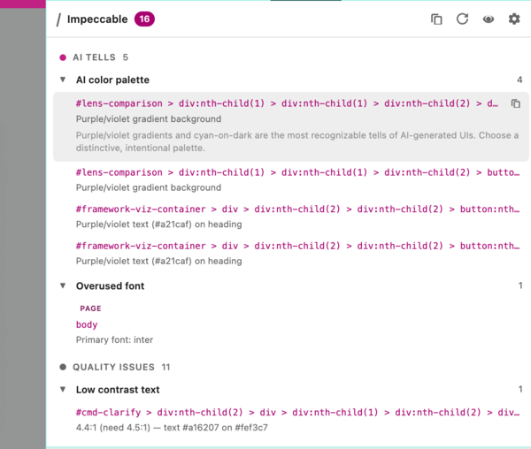

基础能力
在命令和检测之前，Impeccable 先让你的 AI 学会真正的设计。7 个维度的深层参考知识，会在每次写代码时一起加载。
先运行一次 /impeccable teach，把项目的设计上下文建立起来。之后每个命令都会受益。
设计语言
反模式解药
几乎所有 AI 模型都从相似的模板里学到了相似的界面习惯。没有干预时，它们会反复犯同一种错误。Impeccable 会把这些问题命名出来、检测出来，再教 AI 主动避开。


可视模式
直接在页面上高亮设计问题，不需要截图，也不用靠猜。Impeccable 的覆盖层会明确告诉你哪里有问题、问题是什么。
不需要 LLM。单靠模式匹配就能抓出紫色渐变、过度使用的字体、卡片嵌套、低对比度等问题。
你可以在任意网站上用 Chrome 扩展，也可以在 AI 设计评审时通过 /critique 嵌入使用，或者直接运行 npx impeccable live 独立启用。

开始使用
1安装技能包 推荐
18 个命令，实时把你的 AI 拉向更好的设计结果。这是最完整的 Impeccable 使用方式。
npx skills add pbakaus/impeccable
/impeccable teach，为项目建立设计上下文。
/plugin marketplace add pbakaus/impeccable
/plugin
2安装 CLI Beta
直接在终端里扫描文件、目录或在线 URL，识别界面反模式。它能检查渐变文字、AI 常见配色、卡片嵌套、低对比度，以及更多覆盖 HTML、CSS、JSX/TSX、Vue、Svelte 的规则。可用于 CI、pre-commit 或一次性审查，防止 AI slop 混进生产环境。
npm i -g impeccable
npx impeccable detect src/。
3浏览器扩展
在任意页面点击工具栏图标，所有反模式都会直接在原位被高亮出来：渐变文字、紫色系配色、卡片嵌套、过小正文等都会一目了然。适用于 localhost、预发、生产环境，甚至别人的网站。特别适合做竞品观察、PR 可视化评审，或者单纯用更挑剔的眼光浏览网页。
4保持更新
持续获取最新技能定义，并跟进新的命令、反模式规则，以及 Impeccable 背后的设计思路。
npx impeccable skills update
最新更新
- 从 21 个命令收敛到 18 个。清除了重叠与歧义：
/arrange更名为/layout，/normalize合并进/polish（设计系统对齐现在属于最终打磨的一部分），/onboard合并进/harden（空状态与首次使用体验本来就是生产可用性的一部分），而/extract则变成了/impeccable extract（与 craft、teach 并列的子模式）。剩下的每个命令职责都更清晰。 - 废弃技能自动清理。更新后首次加载时，技能会自动识别并清掉被重命名或合并后残留的旧文件，不再需要手动处理。
- 将
frontend-design更名为impeccable。核心 skill 现在与项目同名，teach 子命令也从/teach-impeccable迁移到/impeccable teach。一个 skill，一个命名空间。 - 基于数据的技能重写。核心 skill 现在通过内部评估框架反复测试同一份 brief 在“加载技能”和“未加载技能”两种情况下的输出差异，衡量结果是否会塌缩成单一审美。结果是字体与色彩的多样性显著提升，整体设计质量更强，对 Codex 的支持也明显增强。最大突破来自一套“反吸引子”流程，它会强制模型先列出并否决自身的默认偏好后再做选择。这套方法已在 15 个细分场景下用 gpt-5.4 与 Qwen 3.6 Plus 验证。
- 反模式检测引擎。覆盖排版、色彩、布局、动效与质量的 25 条确定性规则，支持 oklch、oklab、lch、lab 等颜色格式，也能识别边框简写里的 CSS 变量、渐变文字以及只含 emoji 的节点。
- CLI：
npx impeccable detect。可扫描 HTML、CSS、JSX/TSX、Vue、Svelte 与 CSS-in-JS。支持框架识别、多文件导入跟踪、基于 Puppeteer 的在线 URL 扫描、适合 CI 的 JSON 输出，以及面对超大代码库时使用的--fast正则模式。 - Chrome DevTools 扩展。一键检测任意页面：你自己的、本地预发、生产环境，甚至别人的网站。它会读取实时计算样式，在交互面板里展示问题，并直接在页面上高亮对应元素。
/critique变得更有杀伤力。Persona 子 Agent 并行评审、基于 Nielsen 启发式评分、自动运行检测器，并打开实时浏览器覆盖层，让你能在页面里逐条走查。- Impeccable 的新建构路径。
/shape会先围绕目标、用户和任务进行结构化发现式访谈，再在写代码前生成设计简报；/impeccable craft会把这份简报直接串进完整实现流程，让你交付的是经过设计的功能，而不是条件反射式的卡片布局。 - 全新的文档站。现在有顶层的 文档、反模式 和 可视模式 栏目，包含 18 个技能页面、前后对比 demo、内嵌 canonical SKILL.md、2 篇教程，以及 38 张带可视化示例的规则卡片。
- 新增 Rovo Dev。支持的 AI 工具总数来到 11 个。
查看更早版本
- 新增 provider：Trae（中国版与国际版）
/critique现在会基于 Nielsen 的 10 条启发式进行评分，并加入 persona 原型测试与认知负荷评估/audit现在会从 5 个维度打分，并输出带 P0-P3 严重级别的结构化行动建议- 优化技能描述，提升 Agent 自动发现能力
- 修复会导致 GitHub 预览和 Codex 加载异常的 YAML frontmatter 问题（#67）
- Codex CLI 现在对命令引用统一使用正确的
$前缀
/typeset现在会为应用界面优先推荐固定字号体系，把流体排版留给营销页和内容页
- 新增 3 个 skill：
/typeset（修正排版）、/arrange（修正布局与间距）、/overdrive（更有技术野心的效果，beta） - 所有 skills 现在都会通过
.impeccable.md自动读取设计上下文。先运行一次/teach-impeccable，后续都能受益 - 支持命令深链（如
#cmd-overdrive）
- 新增 OpenCode 支持
- 新增 Pi 支持
- 将
/onboard重新归类为增强类命令
- 新增 Kiro 支持（
.kiro/skills/） - 恢复前缀切换：可下载带
i-前缀的 bundle，避免命名冲突 - Audit 与 critique 现在只会推荐真实已安装的命令
- 统一 skills 架构：命令现在也是带
user-invocable: true的 skill - 新增 VS Code Copilot 与 Google Antigravity 支持（
.agents/skills/） - 更新安装流程：默认使用
npx skills add，通用 ZIP 作为后备方案 - 新增包含全部 5 个 provider 目录的通用 ZIP
- 将
/simplify更名为/distill，避免与 Claude Code 冲突
- 首个版本发布，包含增强版 frontend-design skill
- 17 个设计命令：/polish、/audit、/distill、/bolder 等
- 支持 Cursor、Claude Code、Gemini CLI 与 Codex CLI
- 交互式命令速查表上线
常见问题
下载后的文件应该放在哪里？
最简单的方式是运行 npx skills add pbakaus/impeccable，它会自动识别你的 AI 工具，并把文件放到正确位置。
如果你下载的是 通用 ZIP，请把它解压到项目根目录（也就是和 package.json 或 src/ 同级的位置）。它会为各个支持的工具创建对应的隐藏目录：.cursor/、.claude/、.gemini/、.codex/ 和 .agents/。
项目级安装优先级更高，也更适合把技能一起纳入版本控制。
如何更新到最新版本？
在项目根目录运行 npx impeccable skills update。它会下载最新技能定义、清理废弃文件，并保留你当前使用的命令前缀。
- 替代方式：
npx skills add pbakaus/impeccable会从头重新安装一遍。 - Claude Code 插件：打开
/plugin，进入 Discover 标签页。 - 手动 ZIP：从上方下载后，解压到项目根目录。
你的 .impeccable.md 上下文文件不会被覆盖。
命令或技能没有显示，怎么办？
对于命令：在你的 AI 工具里输入 /，看看 /audit、/polish 这类命令有没有出现。如果没有，先确认文件是否放在了正确位置。
对于 skills：当场景匹配时，skills 会自动生效。想验证的话，可以在提示词里明确写上“use the impeccable skill”，强制模型显式确认并应用它。
不同工具的额外设置：
- Cursor：需要切到 Nightly 频道，并在 Settings → Rules 中启用 Agent Skills
- Gemini CLI：需要安装
@google/gemini-cli@preview，并通过/settings启用 Skills
我是第一次接触这些 AI 工具，应该从哪里开始？
Skills 和 commands 更偏进阶能力。如果你刚开始接触，建议先掌握基础用法：
- Claude Code： 官方文档
- Cursor： Cursor 文档
- Gemini CLI： Gemini CLI 文档
- Codex CLI： Codex GitHub
等你熟悉了基础提示词和代码生成流程，再回来试试 Impeccable，会更容易发挥它的价值。
Impeccable 免费吗？
是的。skills、commands、CLI 和检测引擎全部采用 Apache 2.0 许可，完全开源，所有人都可以免费使用。
合作咨询
Impeccable 由 Renaissance Geek 打造。我也会与企业团队合作，提供大规模落地、定制集成，以及面向设计师和开发者的培训支持。如果你是前沿实验室、设计工具公司，或希望提升 AI 生成设计质量的企业，欢迎联系。